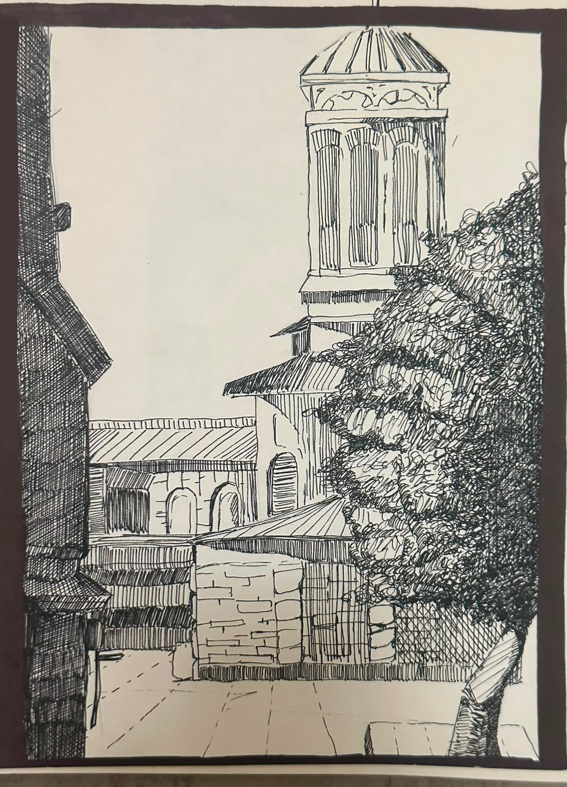
Recreating Architecture. It was an exercise in showing detail without actually drawing every little thing in the reference, and controlling the flow of my pen.
Welcome to my art portfolio. Here you'll find a collection of my illustrations and character designs.

Recreating Architecture. It was an exercise in showing detail without actually drawing every little thing in the reference, and controlling the flow of my pen.
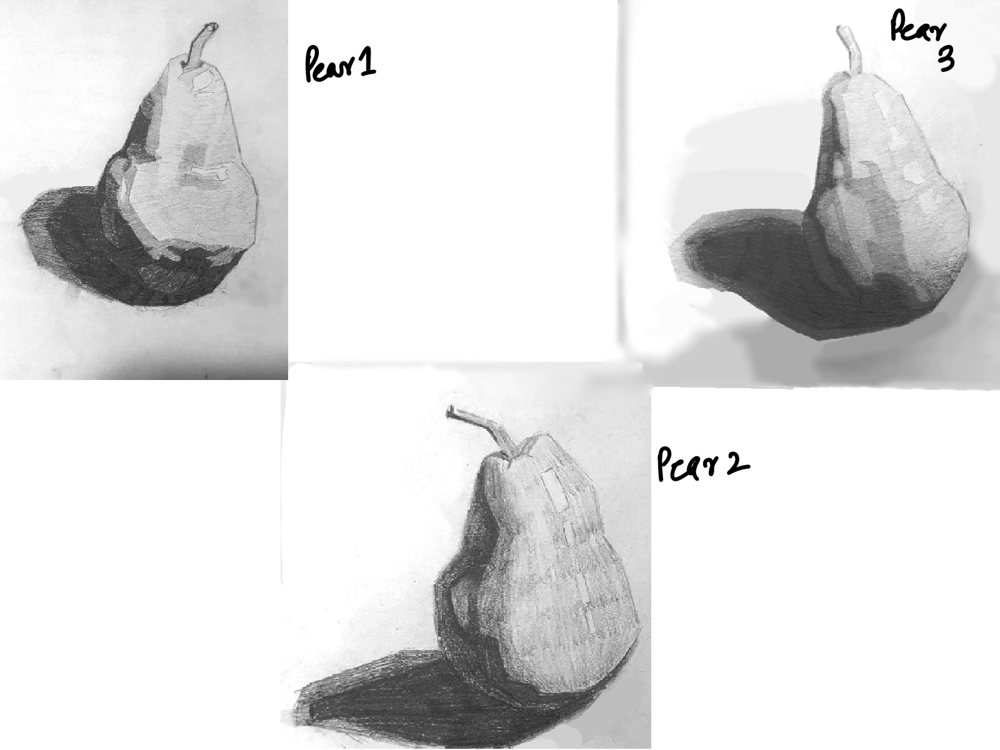
Observational drawing to develop an understanding of form, light, and value.
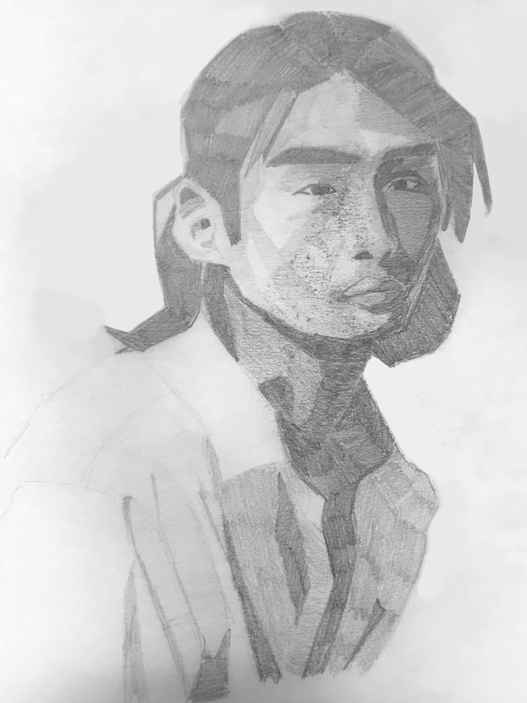
Graphite portrait to better my understanding of the anatomy of the head and light.
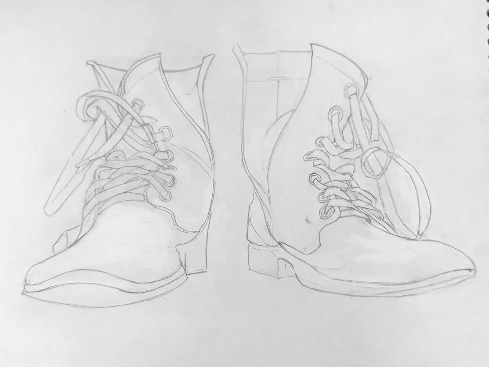
A pair of boots, drawn to help me gauge perspective and form, especially foreshortening.
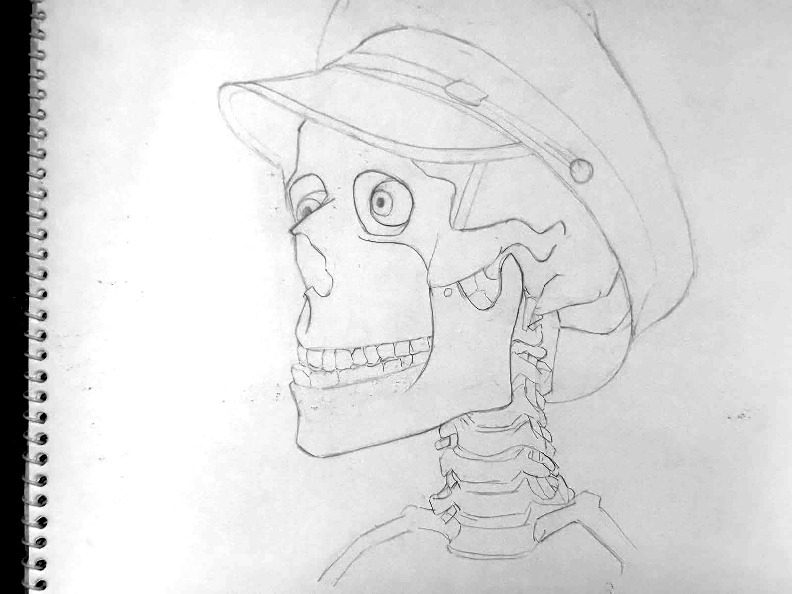
A skeleton head. An exercise in lines and form.
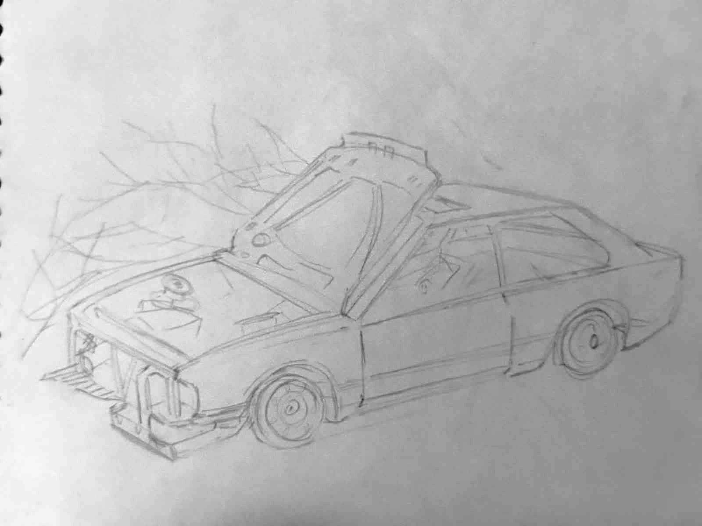
A broken car, to learn detail and perspective.
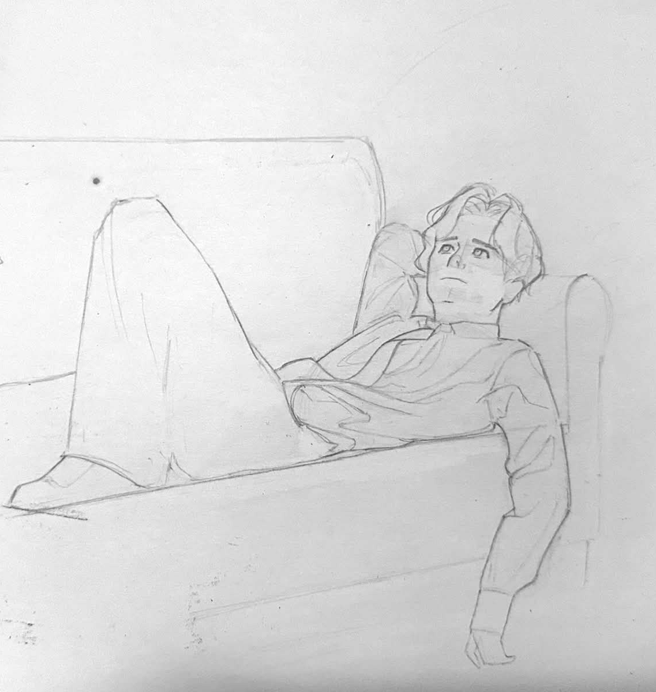
Man on a couch. A demonstration of my anatomy and drapery skills.
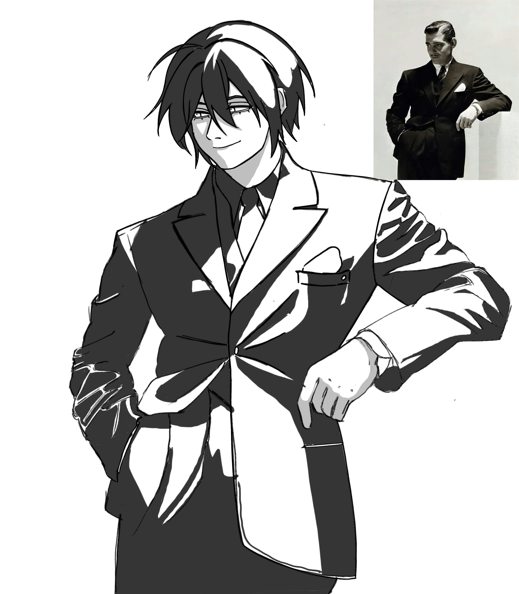
A design of an original character, as well as a two-value study.
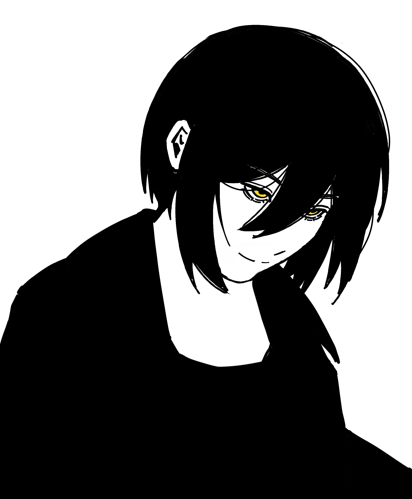
Another design of an original character, stylized and minimalist.
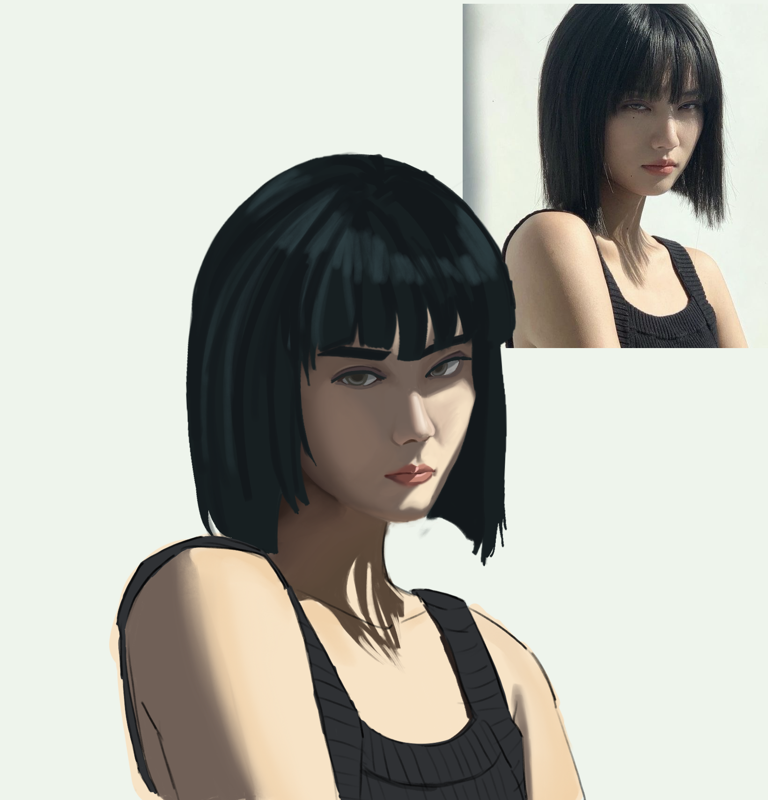
Portrait drawing of a women in sunny lighting. An exercise in painting and color theory, quite different from my usual black and white preferences.
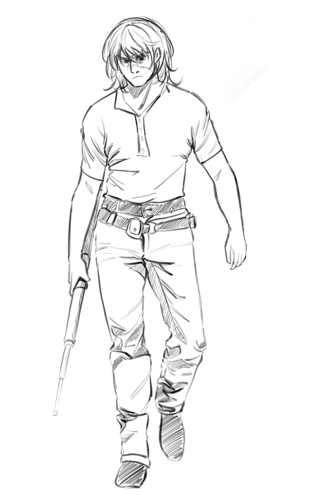
Character design of a hunter. Demonstrates my anatomy and character designing skills.
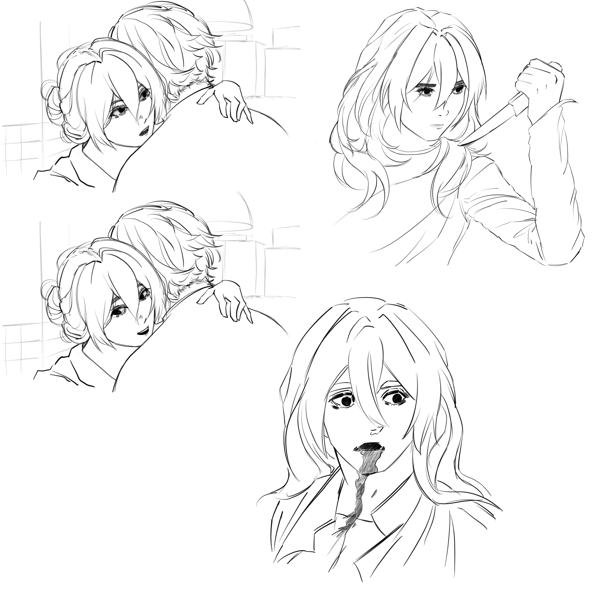
Character artwork, inspired by the film Possession (1981). An interesting exercise in anatomy and body language.